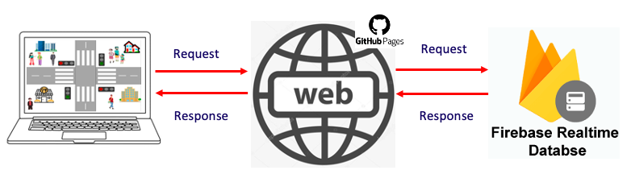

Nguyên lý hoạt động

- Website được triển khai trên GitHub Pages từ đó có thể truy cập ở bất kỳ đâu, chỉ cần có thiết bị có thể sử
dụng được trình duyệt và mạng internet.
- Website kết nối đến cơ sở dữ liệu hoạt động trên nền tảng đám mây Firebase, có thể hiển thị, thêm, xóa và
chọn chế độ hoạt động đèn giao thông.
- Firebase có chức năng lưu trữ các chế độ hoạt động của đèn giao thông, nhận yêu cầu từ website để ghi/xóa dữ
liệu.